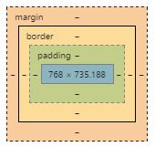

CSS Box Model
The CSS Box Model is one of the most basic features that influence where things go on a web page. It governs three important spacing features of CSS:

margin:
- specifies the position of the element relative to whatever is adjacent to it;
- is always transparent;
- the values for any of the sides can be negative;
- "margin: 0;" is the same as "margin: none;"
border:
- goes around the content and the padding;
- only accept numbers greater or equal to zero;
- most common border properties are border-width (width of the border), border-style (e.g. dashed, dotted, solid) and border-color (any color), others are border-radius or border-gradient
padding:
- controls the amount of space between the elements content and the border;
- only accept numbers greater or equal to zero;
- background of the padded area matches the background of the element